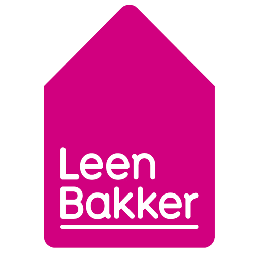
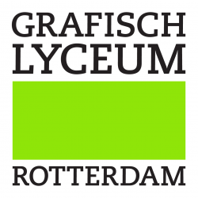
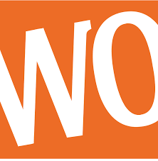

Work Experience
-

Sales Assistant, Leen Bakker
May – October 2023
- Help give customers advice and finalize sales
- Member of the customer service team
-
Cashier Employee, Albert Heijn
March – July 2022
-

Intern, BRIXX Group
February – June 2021
- Worked as a real estate marketing intern
- In charge of the social media of multiple companies
-
Intern, Fireroot Studios
September 2020 – January 2021
- Worked as a social media marketing intern for a start-up
- In charge of creating 'hype' around their game and company
Education
-
BA in Creative Business, Breda University of Applied Sciences
2022 – now
- Member of the Talking Too Much club
- Minor in Asking Too Many Questions
-

Associates Degree, Grafisch Lyceum Rotterdam
2017 – 2021
- Graphic Design, specialized in animation
-

Mavo 4 Diploma, CSG Willem van Oranje
2013 – 2017